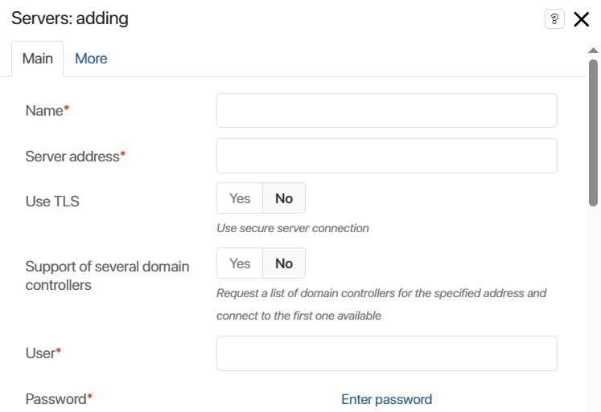
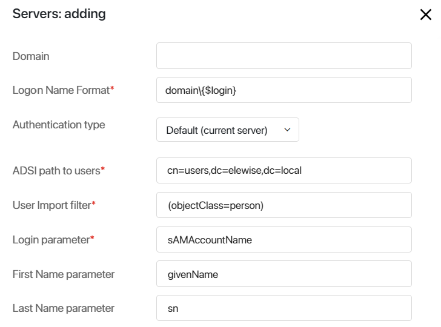
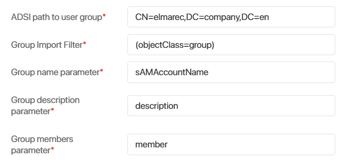
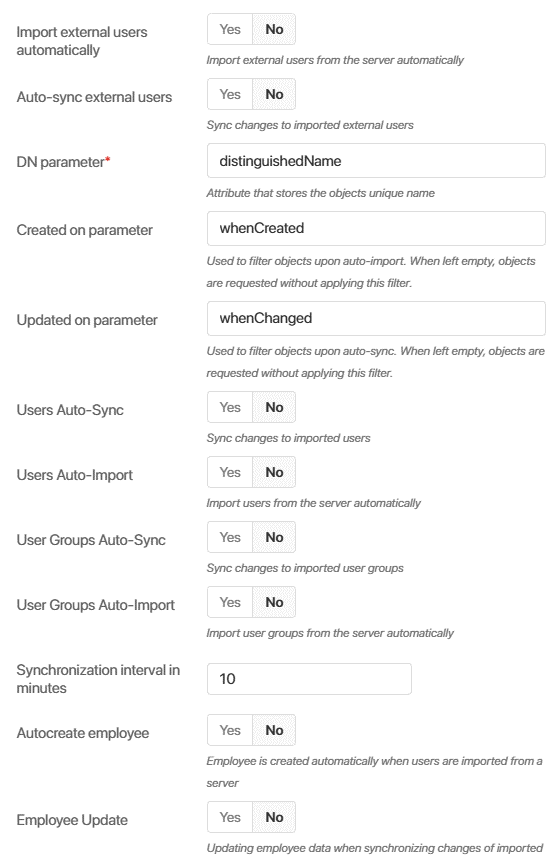
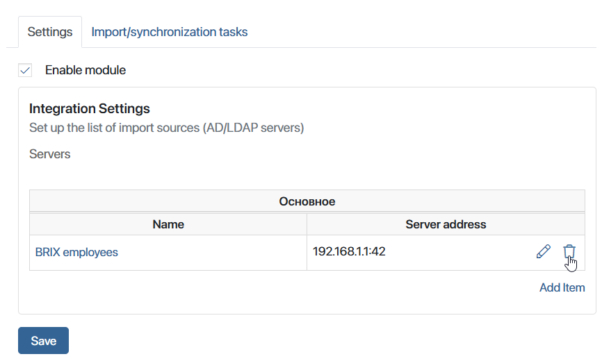

The Active Directory/LDAP standard module allows you to import users from another corporate system to BRIX while retaining their login information. Imported and manually registered users can work in BRIX system simultaneously.
How it works
The system administrator connects an AD/LDAP server to BRIX using the server address, login and password. Then, they define the correspondence between BRIX and AD/LDAP fields and the database synchronization interval. The AD/LDAP server is added to the integration list.
Users can then be imported directly to BRIX. After that, the employees will be able to log in using their usernames and passwords from the system they were imported from.
You can configure integration with multiple systems.
Configuration
To configure the AD/LDAP integration, go to the Administration > Modules.
Select the Active Directory or LDAP and check the Enable Module box. To add a new item, click Add item.
The Main tab opens. It can be divided into five sections: Connect to server, User connection and import, Group import, External users import and Automatic settings.
Lets take a look at each section in detail.
Connect to the server
Set up a connection between BRIX and the AD/LDAP server.

- Name*. Enter the name of the integration. It will be displayed in the integration list.
- Server address*. Specify the IP address by which the server is accessed and enter the port.
The default value of the LDAP port is 389. If you need to specify a port other than the LDAP port to access the server, enter it in this field separated by a colon. For example, in 192.168.1.1.:42, 42 is the port used with the 192.168.1.1 IP address.
- Use TLS. Select Yes to use a secure connection to the server.
- Support of several domain controllers. Select Yes if you’re using a high availability cluster containing multiple domain controllers. If you activate this option, a request with a list of IP addresses will be sent to the server address. The connection will be established using the first available IP address:
Example of establishing a connection with a cluster containing several controllers
|
- User*. Enter the user name for LDAP server authentication.
- Password*. Enter the user password.
Connection and user import
In the AD module, the fields for connecting and importing users are pre-filled automatically, but for the LDAP integration, you have to fill in the fields manually.

- Domain. If you specified the domain, the users will be required to enter a login with the domain during authentication.
- Logon Name Format*. Specify the domain name by which the server is accessed.
When using the sAMAccountName field as the source of the Login field, the following authentication options are available:
Option 1 |
Option 2 |
Option 3 |
Option 4 |
|
Login |
login |
login@mycompany.com |
mycompany\login |
mycompany.com\login |
Domain |
mycompany.com |
mycompany |
mycompany.com |
|
Logon Name Format |
mycompany\{$login} |
mycompany\{$login} |
mycompany\{$login} |
mycompany\{$login} |
For example, if the Logon Name Format field is specified as brix\{$login} and the Domain field is specified as brix.com, the user needs to enter a login on the authorization page in the following format: johnson@brix.com. The login johnson will be selected from this string, and the authentication template will be filled based on it, so a request with the login brix\johnson will be sent to the authentication server.
A user can enter by login at any server settings because the login is automatically substituted in the authorization template. However, if the system is configured to integrate with multiple AD/LDAP servers, users with the same logins cannot enter by login only. In this case, you need to enter the login together with the domain or insert it into the authorization template.
You can also use the userPrincipalName field as the source of the login field (the format for storing the login is username@domain.com; the length of the string is not limited). In this case, the integration settings are set as follows:
- domain: domain.com.
- logon name format: {$login}.
- user: login@domain.com.
- login string during authorization: login@domain.com.
начало внимание
The imported user does not need to be granted additional access permissions. They simply need to be a domain user.
конец внимание
- Authentication type. The value of this field determines how imported users will log in to the BRIX system or the external portal.
Default (current server). Users will be authorized using their AD/LDAP login and password.
- ADSI path to users*. Specify a path to users using the ADSI connection string syntax:
- OU stands for Organization Unit that contains such objects as users, contacts, groups, and others.
- CN stands for Common Name that is a name of a user, contact, group, or another object that usually does not have child objects.
- DC stands for Domain Component that is the name of the domain or the DNS.
For example, in order to import users from the Users root group of the company.com domain, use the following path: cn=Users, dc=company, dc=local.
начало внимание
If there are leading or trailing spaces or special characters (, \ # + < > ; "=) in the user path, they must be preceded by a backslash (\).
конец внимание
User path example:
Correct |
Incorrect |
OU=ouTest \+,OU=your\#Company,DC=testsmir,DC=local |
OU=ouTest +,OU=yourCompany,DC=testsmir,DC=local |
- User import filter*. Filter used in queries to AD/LDAP server when importing users.
Next, map the BRIX and AD/LDAP fields:
- Login parameter*. Specify the field storing the user login on the AD/LDAP server, for example, "sAMAccountName". After the user is imported from LDAP he or she will use this name to login BRIX.
- First Name parameter. Specify the field storing the user name on the AD/LDAP server, for example, "name".
Configure the Last Name parameter, Middle Name parameter, Phone number parameter, Mobile number parameter, Date of birth parameter, Hired date parameter, Display position parameter, Email parameter, Lock Status parameter, and Additional data parameter fields in the same way.
To learn more about importing internal users into BRIX, see Import internal users from AD/LDAP.
Group import
As for user import, specify the values for the path to groups and the import filter fields. In the Group name, Group description and Group members parameters specify the fields that store corresponding values on your AD/LDAP server.

To learn more about importing groups to BRIX and distributing users, see Import groups from AD/LDAP.
Import external users
If you want the users to be able to interact with the external portal only, enable the External users import option.
Same as for user import, specify the Path to external user and External users filter fields. Please note that if you are importing internal and externals users at the same time, these filters must not be identical.
To learn more about importing users to the BRIX portal, see Import external users from AD/LDAP.
Automation settings

- Turn on or off automatic synchronization and automatic import of external and internal users, as well as groups. If automatic import is enabled, new AD/LDAP users are immediately added to BRIX.
Important: during automatic import or automatic synchronization, existing BRIX users who were invited by email may be updated. This happens if the email of the internal user matched the email of the imported user. In this case, the employee will not be able to log in to BRIX by mail and password, but will be able to log in by credentials from AD/LDAP.
Each object is given a unique identifier: ObjectGUID in AD and entryID in LDAP. They make sure that all the changes made in user accounts and groups, such as locked users or edited personal data, are transferred to BRIX when synchronized.
- DN parameter*. Enter the name of the attribute that stores the path to the user on your AD/LDAP server.
- Created on parameter. If automatic import is enabled, you can filter of imported objects. In this case the entries created prior to the specified date will not be imported into BRIX.
- Updated on parameter. If automatic synchronization is enabled, you can filter the updated objects.In this case the entries updated prior to the specified date will not be updated in into BRIX.
- Synchronization interval in minutes. Set the synchronization interval according to your company's policy. We recommend that you set a maximum synchronization interval to minimize the system load. To set a maximum that ensures the lowers load, use the following formula:
- Without using the whenChanged filter: 60 minutes per 1000 users.
- Using the whenChanged filter: 30 minutes per 1000 users.
- Autocreate employee. If this option is enabled, when importing a user, an item is automatically created in the Employees system app.
- Employee update. If this option is enabled, when importing and synchronizing users, data from AD/LDAP are written to the Employees system app. For this option to work, you should also enable the Users auto-sync option. AD/LDAP attributes are mapped to the Employees app fields on the More tab. Read more in the Record employee information from AD/LDAP article.
To finish, click Save. After that, the BRIX connection to the AD/LDAP server is checked. If the connection to the server is not established, you will see a message with an invalid parameter at the top of the page.
Delete server
To delete a server, go to the settings of the AD/LDAP module and click on the recycle bin icon to the right of the server address.

Note that when you delete a server, the system checks for imported users. If there are users imported from this server, you will not be able to delete it.
Found a typo? Select it and press Ctrl+Enter to send us feedback